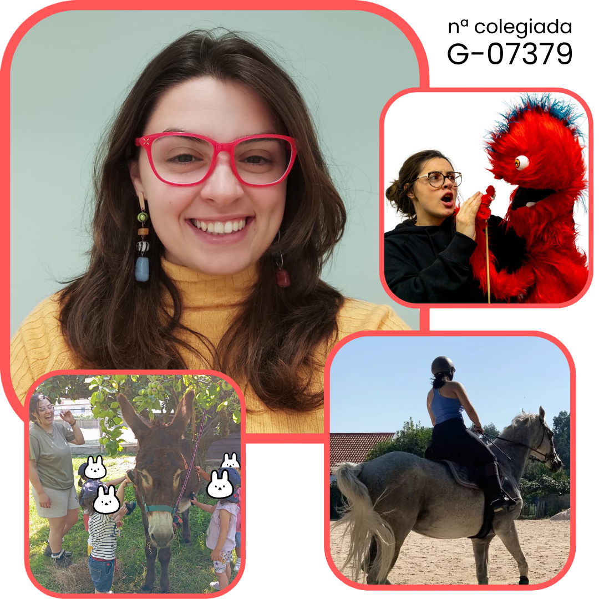

Terapia
Conoce a Olalla
Mi nombre es Olalla Suárez Ladero (G-07379) y soy graduada en Psicología, con un enfoque centrado en el
bienestar emocional, el acompañamiento respetuoso y la conexión entre la persona, el entorno y los animales.
Mi trabajo se apoya en una base psicológica sólida, integrando la terapia asistida con animales como una
herramienta de intervención profundamente eficaz y respetuosa.
Cuento con formación específica en Terapia Asistida con Animales por la Universidad de Nebrija, así
como la titulación de Experta en Intervención Asistida con Animales (IAA) a través de Animalia
Formación.
Mi experiencia profesional incluye prácticas curriculares, una beca y posteriormente el ejercicio como
psicóloga en Emocionali Psicología, donde he acompañado a personas en procesos de desarrollo personal,
regulación emocional y bienestar psicológico, siempre desde una mirada ética y centrada en la persona.

Además de psicóloga, soy amazona, y el vínculo con los animales —y en especial con los équidos— forma parte
tanto de mi vida personal como de mi recorrido profesional.
Este contacto continuado me ha permitido desarrollar una sensibilidad especial hacia el lenguaje no verbal, los
ritmos naturales y la importancia del vínculo y la confianza mutua, aspectos clave en la intervención asistida
con animales.
Trabajo desde la empatía, la escucha y el respeto por los tiempos individuales, creando espacios seguros donde
las personas pueden explorar sus emociones, fortalecer su autoestima y reconectar consigo mismas, acompañadas
por animales que actúan como mediadores naturales del proceso terapéutico.
¿Quieres que nos conozcamos?
¡Sólo tienes que contactarnos!